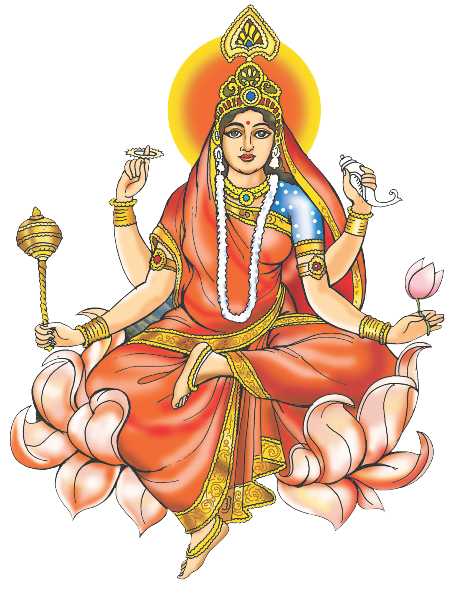
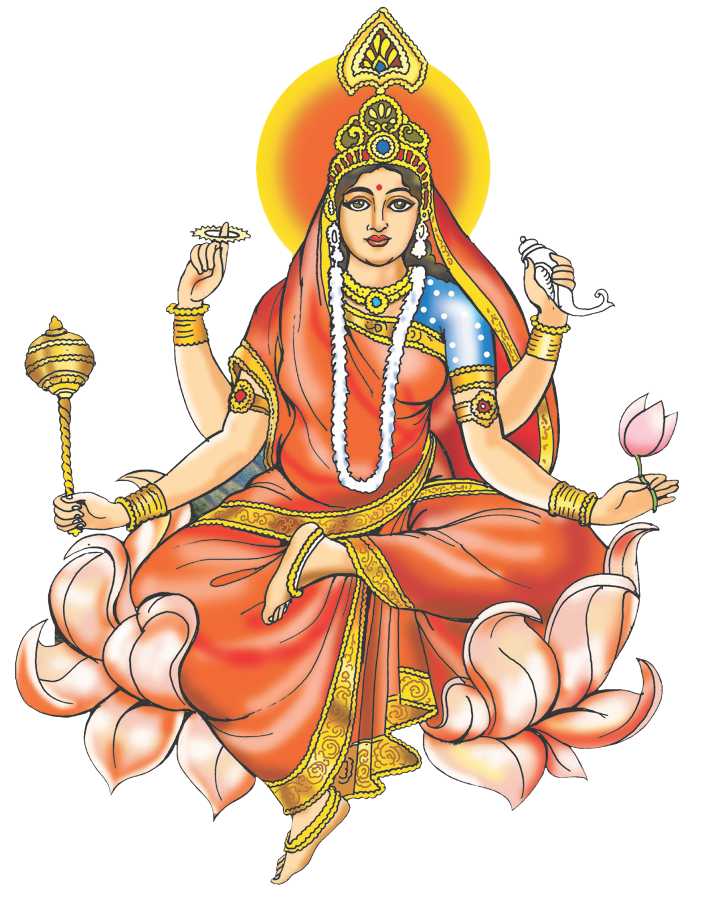

नवरात्रि के पहला दिन मां दुर्गा के प्रथम स्वरूप मां शैलपुत्री की उपासना की जाती है।
मां दुर्गा अपने पहले स्वरूप में शैलपुत्री के नाम से पूजी जाती हैं। पर्वतराज हिमालय की पुत्री होने के कारण इनका नाम शैलपुत्री पड़ा। अपने पूर्व जन्म में ये प्रजापति दक्ष की कन्या के रूप में उत्पन्न हुई थीं तब इनका नाम सती था।
2.mata brahamcharni
मां ब्रह्मचारिणी व्रत कथा
नारदजी की सलाह पर उन्होंने कठोर तप किया, ताकि वे भगवान शिव को पति स्वरूप में प्राप्त कर सकें। कठोर तप के कारण उनका ब्रह्मचारिणी या तपश्चारिणी नाम पड़ा। भगवान
शिव की आराधना के दौरान उन्होंने 1000 वर्ष तक केवल फल-फूल खाए तथा 100 वर्ष तक शाक खाकर जीवित रहीं। कठोर तप से उनका शरीर क्षीण हो गया।
3.mata Chandrghanta
शारदीय नवरात्रि का आज तीसरा दिन है और इस दिन मां दुर्गा के तीसरे स्वरूप चंद्रघंटा की पूजा की जाएगी। देवी भागवत पुराण के अनुसार, मां दुर्गा का यह स्वरूप परम शांतिदायक और कल्याणकारी है। इनके मस्तक में
घण्टे के आकार का अर्धचंद्र है, इसी कारण देवी का नाम चंद्रघण्टा पड़ा है।
4.mata Kushmandha
नवरात्रि में चौथे दिन देवी को कूष्मांडा के रूप में पूजा जाता है।
अपनी मंद, हल्की हंसी के द्वारा अण्ड यानी ब्रह्मांड को उत्पन्न करने के कारण इस देवी को कूष्मांडा नाम से अभिहित किया गया है। जब सृष्टि नहीं थी, चारों तरफ अंधकार ही अंधकार था, तब इसी देवी ने अपने ईषत् हास्य से ब्रह्मांड की रचना की थी।
5.mata Skandmata
नवरात्रि के पांचवें दिन स्कंदमाता की अराधना की जाती है।
भगवान शिव और माता पार्वती के पुत्र कार्तिकेय को स्कंद के नाम से भी जाना जाता है। भगवान स्कंद को माता पार्वती ने प्रशिक्षित किया था, इसलिए मां दुर्गा के पांचवें स्वरूप को स्कंदमाता कहते हैं। एक पौराणिक कथा के अनुसार, कहते हैं कि एक तारकासुर नामक राक्षस था।
6.mata Katyayni
पौराणिक कथाओं अनुसार महर्षि कात्यायन ने भगवती जगदम्बा को
पुत्री के रूप में प्राप्त करने के लिए कठिन तपस्या की थी। कठिन तपस्या से प्रसन्न होकर महर्षि कात्यायन के यहां देवी ने पुत्री के रूप में जन्म लिया, जिससे वह मां कात्यायनी कहलायीं। मां ने कई राक्षसों का वध कर,
संसार को भय मुक्त कराया।
7.mata Kalratri
कथा के अनुसार दैत्य शुंभ-निशुंभ और रक्तबीज ने तीनों लोकों में हाहाकार मचा रखा था।
इससे चिंतित होकर सभी देवतागण शिव जी के पास गए। शिव जी ने देवी पार्वती से राक्षसों का वध कर अपने भक्तों की रक्षा करने को कहा। शिव जी की बात मानकर पार्वती जी ने दुर्गा का रूप धारण किया तथा शुंभ-निशुंभ का वध कर दिया।
8.mata Mahagauri
एक कथा अनुसार भगवान शिव को पति रूप में
पाने के लिए देवी ने कठोर तपस्या की थी जिससे इनका शरीर काला पड़ जाता है। देवी की तपस्या से प्रसन्न होकर भगवान इन्हें स्वीकार करते हैं और शिव जी इनके शरीर को गंगा-जल से धोते हैं
तब देवी विद्युत के समान अत्यंत कांतिमान गौर वर्ण की हो जाती हैं तथा तभी से इनका नाम गौरी पड़ा।
9.mata Shidhidatri
चैत्र नवरात्रि के नौवें दिन को महानवमी कहा जाता है.
चैत्र माह के शुक्ल पक्ष की नवमी तिथि को नवरात्रि का नौवां दिन होता है. महानवमी के दिन मां दुर्गा के नौवें स्वरूप मां सिद्धिदात्री की पूजा करते हैं. मां सिद्धिदात्री सभी प्रकार की सिद्धियों को प्रदान करती हैं.


 


{kind=link}
{kind=link}


{kind=link}